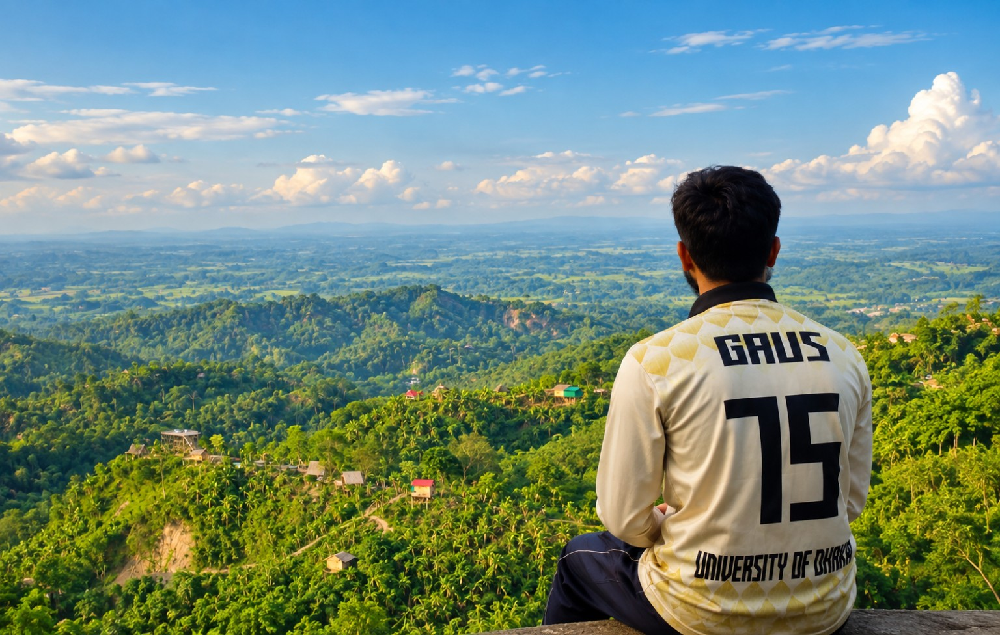
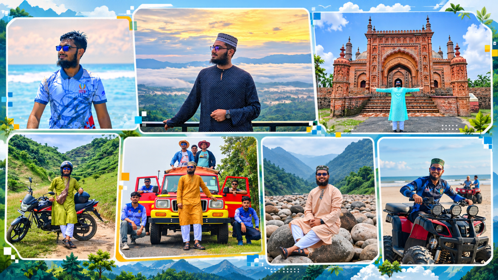

Hi, I'm Muinuddin Gaus.
I travel to experience the country's landscapes, culture and people. I enjoy exploring new places, learning from every journey and turning those experiences into useful stories, ideas and projects.
See my travelsExplore my toolsChoose a door
Four parts of my website, each with a different purpose.
Travel
Places, district photographs, stories and experiences from across Bangladesh.
Tools
Browser extensions and useful experiments, with separate guides for each tool.
Information
Education, experience, leadership, certificates, projects and skills.
Portfolio
My creations: design, writing, research, books, videos and published work.
I travel to understand, not just to visit.
Nature, culture, people and the character of each place are what keep me curious. I enjoy moving beyond the familiar, exploring landscapes and heritage, meeting people, and learning how different parts of Bangladesh live and tell their stories.
Travelling has also shaped the way I work. It has taught me to observe carefully, document experiences, plan journeys, help others travel and turn what I discover into useful ideas, research and creative work.

Have a question?
Ask about my work, tools, travel or projects. You can send the question to me and I can reply personally.